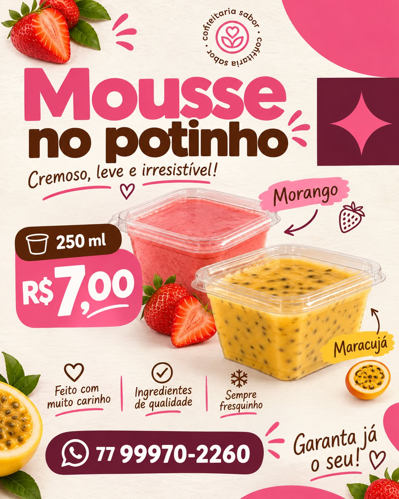
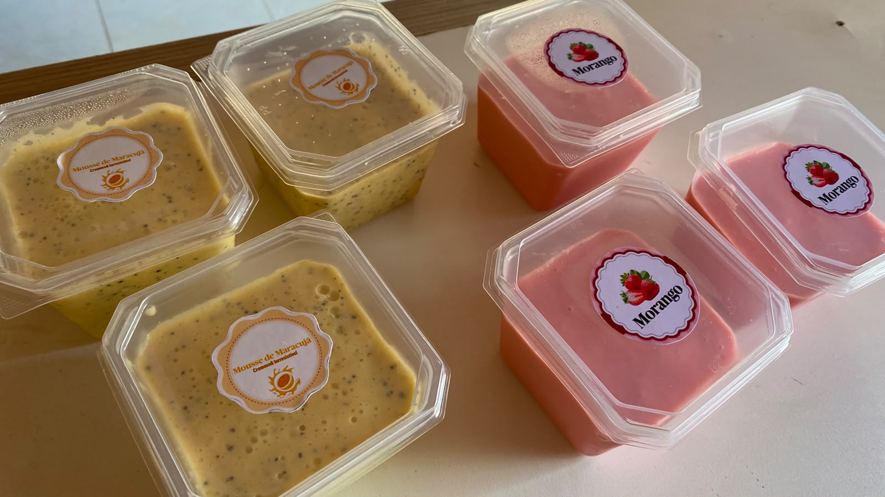
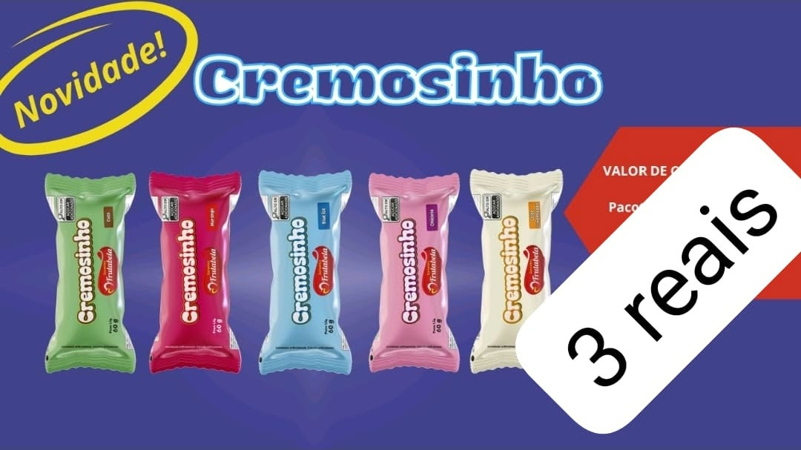

Queridinho01 / MOUSSESR$ 7,00
Mousse no potinho
Cremoso, leve e irresistível. Disponível nos sabores morango e maracujá.
250 ml
Pequenos momentos ficam ainda mais gostosos com um docinho. Conheça nossas delícias e escolha a sua.

Opções para adoçar sua pausa, compartilhar ou simplesmente aproveitar.

QueridinhoCremoso, leve e irresistível. Disponível nos sabores morango e maracujá.

NovidadeUma opção geladinha e gostosa para refrescar o seu dia. Consulte os sabores disponíveis.
Consulte a disponibilidade dos sabores e produtos pelo WhatsApp.
O Ateliê de Doces nasceu para levar um toque de carinho à sua rotina. Escolha sua delícia favorita e fale com a gente para consultar a disponibilidade.
Conversar pelo WhatsApp ↗Chame pelo WhatsApp para consultar sabores, disponibilidade e combinar seu pedido.